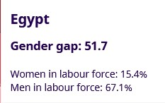

ilo.org
The gender gap in employment: What's holding women back?
Explore this InfoStory to get the data behind the trends and learn more about the different barriers that hold women back from decent work.


wilsoncenter.org
Egyptian Women & Labor Force: Challenges and Opportunities
Digital literacy is also higher among males in urban and rural areas, particularly in older populations. Investment to bridge the digital divide and support women entrepreneurship is promising though. Among employees in the private sector, the percentage of women using computers and the internet is higher than males.

rand.org
Women in Egypt Face Barriers to Employment
Large gains in educational attainment among women in Egypt have not been matched with gains in the workplace. Obstacles preventing them from securing employment include tensions between work and family responsibilities, lack of mobility, wage gaps, and fear of sexual harassment.